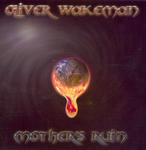

| Artist: | Oliver Wakeman |
| Title: | Mother's Ruin |
| Label: | Progrock Records PRR 235 |
| Length(s): | 52 minutes |
| Year(s) of release: | 2005 |
| Month of review: | [06/2006] |
| 1) | Don't Come Running | 3.45 |
| 2) | The Agent | 8.36 |
| 3) | In The Movies | 5.11 |
| 4) | Walk Away | 4.25 |
| 5) | Mother's Ruin | 6.11 |
| 6) | Calling For You | 4.02 |
| 7) | If You're Leaving | 4.51 |
| 8) | I Don't Believe In Angels | 4.32 |
| 9) | Wall Of Water | 10.42 |
The Agent continues with driving rhythm guitars, making for a plodding opening and extensive keyboards building a bit of atmosphere. Again, I am mostly reminded of Threshold, also because the guitarwork is quite heavy and the vocal melodies remind a bit of that mind (and this is a compliment). The biggest distinction lies in the fact that there are more keyboards here, which bring in a hint of Nolan's work with Arena, although when one listens in detail, Wakeman does bring in his own typical keyboard sound. Good pomp prog, this. Past halfway, the music drops out largely, and the vocals take over with only a bit of accompaniment. This is the agent talking, as he takes over the life of the artist. The orchestral leanings towards the end are a nice touch, just before we recap in the encore.
In The Movies is a ballad like tune, with a strong sense of tragedy, evidenced in the plaintive vocal melodies, which are strong. The music powers up for the chorus, shwoing we are back in the arena of catchy pomprock. After Oliver's solo spot, a long one indeed, we return to the opening played in a fuller orchestral way. Again, the melodic material is strong, and the song works also on an emotional level. The song ends with piano and soft keys.
Walk Away brings us more into the realm of Asia again: a compact rock song, nothing too heavy with plenty of chorus/verse material. I guess the Mother in Mother's Ruin is our Mother Earth, and it is fitting that the bands opens in the bombastic style of Threshold, because this is also the type of lyrical material that that band considers. Musically this is a somewhat waltzy track, the vocal melody of which reminds me of Landmarq.
On Calling For You, the band forgot all about the melody, and focuses on typical stadium rock instead with plenty of pace and energy, but also very very straighforward. The middle part has a bit more instrumental adventure, but it does not save the song.
If You're Leaving is the love ballad, with some pretty melodramatic guitar lines. The music can be compared to Landmarq, but it is a bit too sugary for my tastes, although certainly not bad, and above the average progmetal love ballad. I Don't Believe In Angels is differenty again with a bit of funkiness in there even. The guitars are heavy though, and tirelessly Wakeman solo's on.
Wall Of Water is the closing epic, crossing the ten minute mark. At a guess, I thought this song could be about the disaster in Asia some years back, but it turns out the song is about drug addiction. The song has all the typical ingredients, starting off slow, and slowly building up. We find all the instrumental soloing, and also a bit of storytelling here, but I do find the song a bit lacking in melodic development.